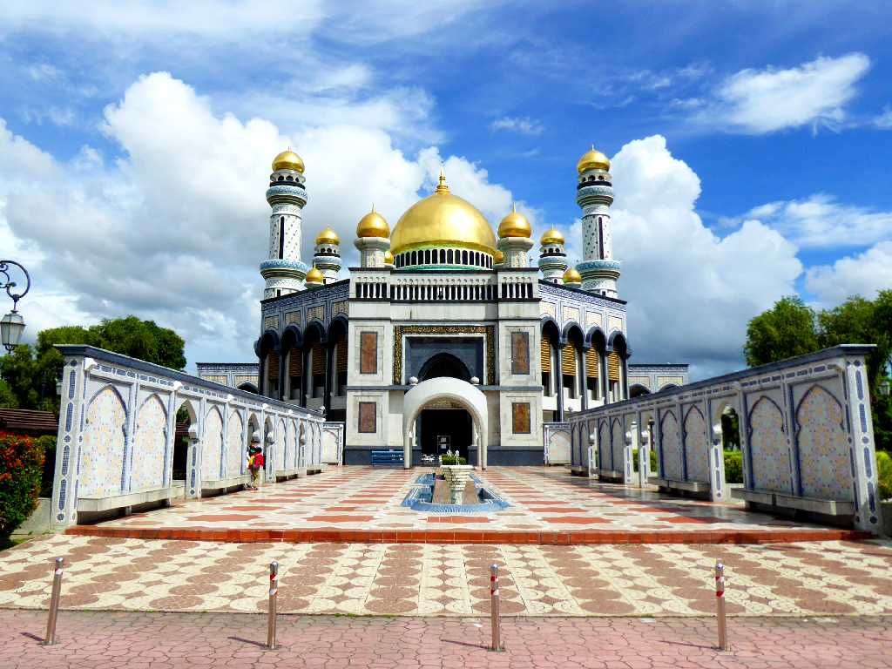
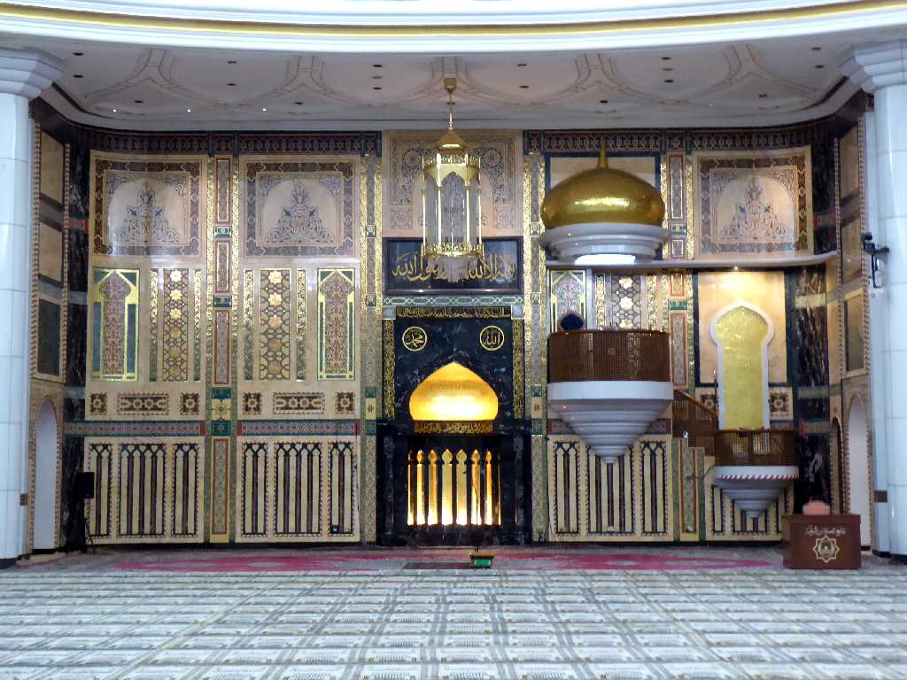
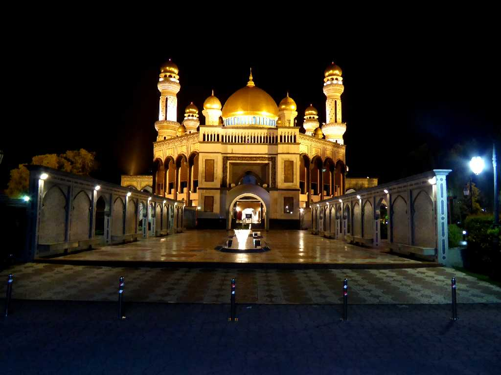
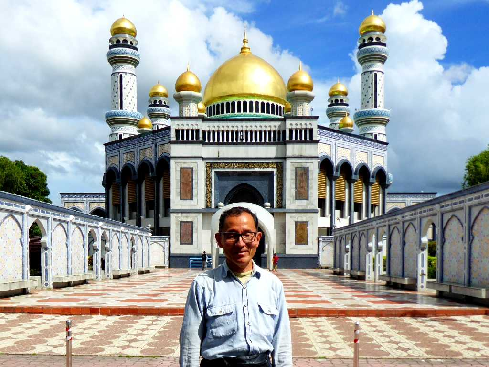
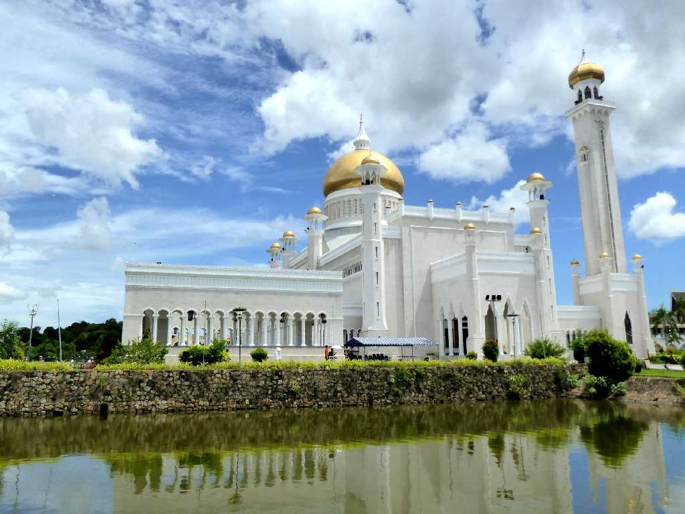
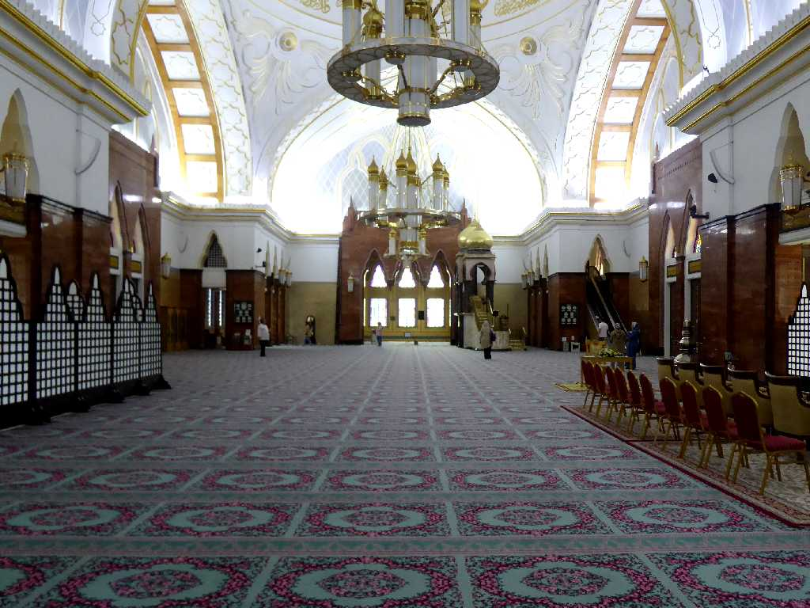

Jame Asr Hassanil Bolkiah Mosque (New Mosque)
１９９４年に第２９代スルタン ハサナル・ボルキアの命により創られたモスク

Mihrab
２９の黄金ドームと４本のミナレットからなる５千人収容できる荘厳なモスク

Night View

June 25 2024 New Mosque

Sultan Omar Ali Saifuddien Mosque (Old Mosque)
１９５８年に第２８代スルタン オマール・アリ・サイフディーン３世の命により創られたモスク

Mihrab
金箔の巨大ドームと高さ５２mのミナレットを持ち人口湖にはブルネイの伝統的な石船が浮かぶ荘厳なモスク